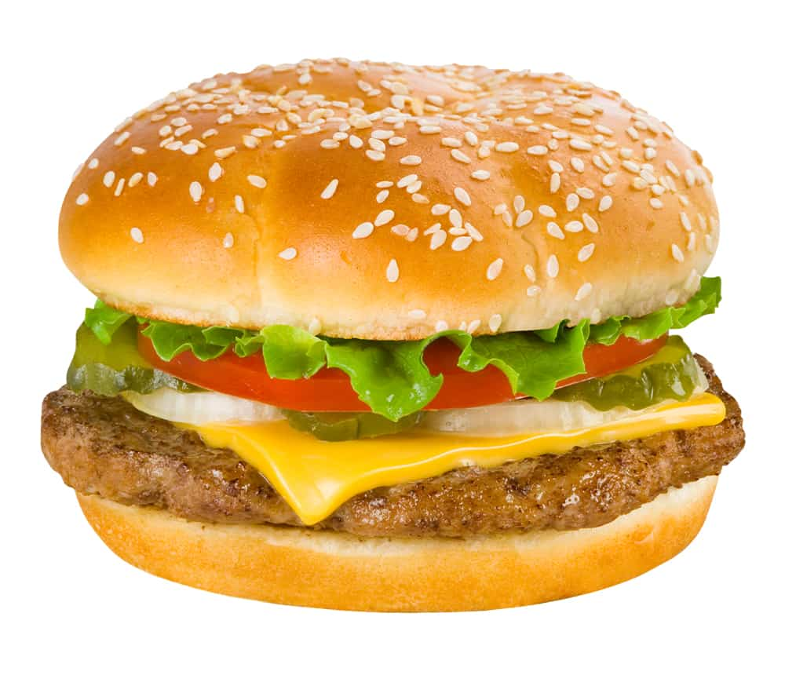

Cheeseburger

Description
The classic all-American cheeseburger. No further explanation needed.
I would like to mention, however, the fact that this cheeseburger will
be prepared using a frying pan rather than a grill. It's a good way
to eat an authentic, homemade cheeseburger if you do not own a grill,
like me.
Ingredients (makes 1 cheeseburger)
- 100g ground beef
- 100g ground pork
- 1&1/2 tb butter
- 1 hamburger bun
- 2 slices of American cheese
- 1 slice of tomato
- 1 slice of white onion
- leaf of lettuce (best if sized to hamburger bun
- 2 or 3 pickle chips
- mustard
- ketchup
Instructions
- Roll the beef, pork, and 1 tb butter into a ball.
- Divide the ball into two halves, and form the halves
into separate balls.
- Squash the two balls into flat patties, taking care to make sure the
edges are even. Place 1 slice of American cheese on top of one
of the patties. Place the other patty on top of that. Press the edges
together so as to seal the cheese in between the two patties. It is
now a single, cheese-filled patty.
- On medium heat, place the remaining 1/2 tb butter into
the frying pan. Shift it around so that it evenly coats the
pan. Place the patty into the pan and allow it to fry until
it can be seen that the meat is cooked halfway up the side of
the patty. Flip the patty and allow for the other half to cook.
When both sides are cooked, continue flipping occasionally until
the patty achieves a darker, more well-done-looking color.
- When the patty seems ready, place the other slice of cheese on
top of it and cover the pan for one or two minutes. This will
cause the cheese to melt, which is important for Step 7.
- Meanwhile, prepare the buns by applying mustard and ketchup
to taste on the top bun. Place the lettuce on the bottom bun,
and the tomato on top of that.The lettuce creates a nice barrier
between the bun and the other ingredients, which tend to be
moist and can cause the bun to fall apart prematurely.
- Remove the patty with melted cheese from the pan and place it
atop the tomato on the bottom bun. Next, place the sliced
onion atop the melted cheese of the patty and press it in
slightly. This will cause the onion to stay put a bit better while
eating. Place the pickles atop the onion, and finish by placing
the top bun. The cheeseburger is now complete.
- Enjoy with French fries and beer!